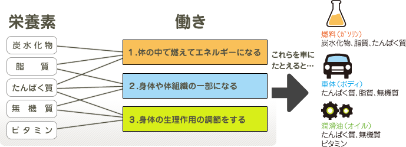

栄養
人が、生命活動や健康を維持する為に必要な物質を外界から取り込む行為を栄養と言い、その必要な物質を栄養素と呼ぶ。栄養素には５つあり、通常我々は食べるという行為を通じて食物から取り入れる。５つの栄養素とその働きについては次の図の分類になる。

栄養素の働き
栄養素の働きは次の３つに大別される。
(1)体の中で燃えてエネルギーになる。
体の中で燃えてエネルギーになる。
これに該当するのが「炭水化物」と「脂質」と「たんぱく質」。これらの栄養素を燃やすことにより、エネルギーを得て私達の生命活動の源としている。いわば私達の元気の素である。食品のカロリーと呼ぶものは、これらの栄養素が燃えて発生する時のエネルギーの合計である。 「炭水化物」は主に主食となる穀類のでんぷんから得ており、主燃料となるが、摂りすぎると脂肪に変換され体内に蓄積する。 「脂質」の主なものは脂肪であり、最も燃焼効率がよく、燃料としては優れている。しかし、燃えずに残ると、皮下脂肪として体内に蓄積される。
「たんぱく質」も燃えてエネルギーになる栄養素である。しかし「たんぱく質」は、身体や体組織の一部になったり、身体の生理作用の調節をする、という大事な働きもあり、一人三役を果たす。したがって、「たんぱく質」はできるだけ燃料としては使いたくない栄養素であり、「炭水化物」や「脂質」の摂取量が少ないと、この大事な「たんぱく質」が燃やされてしまう事になる。
栄養素のエネルギー効率（１ｇが燃えるときに発生する熱量）は次の通り
これら３つの栄養素の摂取量の比をＰＦＣ比という。健康な生活を送るための目標値が示されている。
Ｐ：たんぱく質（Ｐｒｏｔｅｉｎ）
Ｆ：脂質（Ｆａｔ）
Ｃ：炭水化物（Ｃａｒｂｏｈｙｄｒａｔｅ）
(2)身体や体組織の一部になる。
身体の構成成分は、水が６２％を占め、残りがたんぱく質、脂質、無機質からなる。
水を除くと、たんぱく質が４５％、脂質が３９％、無機質が１６％の割合である。たんぱく質は、筋肉や臓器、皮膚、毛髪、つめなど身体の重要な部分を形成している。脂質は、主に皮下脂肪を形成している。無機質は、骨、歯、血液などの構成成分となっている。
(3)身体の生理作用の調節をする。
該当するのは、たんぱく質、無機質、ビタミン。たんぱく質は、酵素やホルモンを形成し、無機質やビタミンと同様に微量で身体の調子を整える大事な働きをする。このいずれも、不足すると身体に重大な支障をきたす。これらは常に食物から常に十分に摂取する必要がある。
５つの栄養素
（１）炭水化物（Ｃａｒｂｏｈｙｄｒａｔｅ）
炭水化物には消化吸収されて栄養となるものとそうでないものとがある。前者を糖質、後者を食物繊維と呼ぶ。
| 炭水化物 | 糖質…燃えてエネルギーになる。でんぷん、グリコーゲン、ショ糖、ブドウ糖など。 |
|---|---|
| 食物繊維…消化吸収できない。セルロース、ペクチン、ガラクタン、アルギン酸、 グルコマンナンなど。 |
〔糖質〕
糖質は体を動かし、体温を保つための主なエネルギー源である。体の中で分解され、燃えて、二酸化炭素と水とエネルギーになる。車のガソリンと同じ働きである。血液中の糖の量（ブドウ糖の濃度）が血糖値である。これが少なくなると、脳にお腹が空いたという信号が送られる。糖質は、過剰に摂ると体脂肪に変換されて蓄積される。
糖質の基本は単糖類（ブドウ糖、果糖、ガラクトース）である。単糖が二つ結合したものが二糖類（ショ糖、麦芽糖、乳糖）。単糖が何千、何万と結合したものが多糖類（でんぷん、グルコース）である。単糖類や二糖類はいわば紙のようなもので、あっという間にメラメラと燃えてしまう。一方、でんぷんのような多糖類は、体の中で、消化酵素により、少しずつ分解されてゆき、ゆっくり燃えてゆく。いわば、木炭や炭のようなものであり、長持ちする。つまり、砂糖などの少糖類は即効性のあるエネルギー源で、疲労回復には効果があるが持続性が無く、すぐに燃え尽きてしまう。そのため、食事代わりに清涼飲料水などの糖分で空腹感を満たすような事は、突然、低血糖状態を招く恐れがある。したがって、日常の食習慣では、でんぷんを主体とする食品を主食にする事が望ましい。
〔でんぷんを多く含む食品〕
穀類…米、小麦、とうもろこし
穀類を原料とした食品：ご飯、パン、めん類（うどん、そーめん、ひやむぎ、ラーメン、やきそば）、パスタ類（スパゲッティ、マカロニ）
いも類…じゃがいも、さつま芋、里芋、長芋など
〔食物繊維〕
食物繊維は、第６の栄養素とも呼ばれるようになり、健康維持に重要な役割を果たす。便秘予防や整腸作用、肥満防止、糖尿病やガンや動脈硬化の予防の効果があるとされている。食物繊維には水溶性のものと不溶性のものとがある。水溶性はコレステロールを低下させ、便の量を増加させる働きがある。不溶性のものは便通を良くし、大腸がんの予防の効果があるとされる。
溶性…ペクチン（果実類）、ガム（豆類）、グルコマンナン（こんにゃく）、アルギン酸（海藻類）
不溶性…セルロース（野菜、芋類、穀類）、キチン（えび･かに類）
〔食物繊維を多く含む食品〕…海藻類、穀類、豆類、柑橘類、いも類、野菜、きのこ
一日の必要量は２０ｇ～２５ｇ。現代人はやや不足気味。食物繊維は成人病を予防し、いい事づくめだが、低栄養状態の場合や下痢気味の時はとり過ぎに注意。
（２）脂質（Ｆａｔ）
脂質は、中性脂肪、リン脂質、コレステロールに分類される。食品に含まれる脂質のほとんどは中性脂肪である。リン脂質とコレステロールは細胞膜やホルモンの材料になる。コレステロールは、血液中に過剰に存在すると動脈硬化の原因になる。中性脂肪は効率のいいエネルギー源（９ｋcal／g）となるが、摂り過ぎると皮下脂肪となり、肥満の原因になる。中性脂肪は、体内で分解され脂肪酸になる。脂肪酸には、飽和脂肪酸と不飽和脂肪酸がある。飽和脂肪酸は、血中コレステロールを増やすが、逆に、不飽和脂肪酸は血中コレステロール濃度を低くする働きがある。また、高度の不飽和脂肪酸（IPAやDHA）は動脈硬化の予防に効果があるとされ注目されている。動物の成長に欠かせないリノール酸やα―リノレン酸などの不飽和脂肪酸は、体内で合成されないため必須脂肪酸と呼ばれ、食物から摂取しなければならない。
必須脂肪酸…
動物油には飽和脂肪酸が多い：肉類、動物油（ラード、ヘット）、バター 植物油・魚油には不飽和脂肪酸が多い：サラダ油、コーン油、キャノラー油（菜種油）、魚介類 現代人の食生活は、動物油の摂取が過剰気味なので、植物油や魚を摂るように心掛けたい。
(3)たんぱく質（Ｐｒｏｔｅｉｎ）
たんぱく質は体の重要な部分を構成するとともに、酵素やホルモンを形成する最も重要な栄養素である。たんぱく質は多数のアミノ酸が結合して出来ている。我々は、食物からたんぱく質を取り込み、これを分解して体に必要なたんぱく質を新たに作っている。たんぱく質は約２０種のアミノ酸から作られている。このうち、９種類は体内で作ることができない。これを必須アミノ酸といい、食物から摂取しなければならない。
〔たんぱく質を多く含む食品〕
たんぱく源には魚貝類、肉類、卵類、乳・乳製品、豆類があげられる。これらの食品は、食卓で、主菜の位置を占める食品群である。ほとんどが動物性食品の中、豆類は貴重な植物性たんぱく質を含む食品として重要である。なかでも、大豆は「畑の肉」とも称され、豆腐や豆腐加工品、みそ、しょう油、納豆、もやし、きなこなど、数多くの大豆加工品が我々の身近な食品として出回っている。
(4)無機質（Ｍｉｎｅｒａｌ）
無機質は、骨や歯、血液の成分として重要であるばかりでなく、生理作用の調節の役割も果たしている。無機質は、過剰にとっても、不足しても健康維持に大きな影響を及ぼす。不足しがちな、無機質はカルシウムと鉄。カルシウムは骨と歯の成分であり、不足すると骨粗しょう症や骨軟化症を引き起こす。鉄は血液の成分であり、不足すると貧血になる。とくに妊娠中は胎児に栄養を取られるために、カルシウムも鉄も多めに摂る必要がある。
摂取過剰なものとしては、ナトリウムとリンがあげられる。ナトリウムは塩分に含まれるものであり、取り過ぎは高血圧症を引き起こす。リンは、カルシウムの吸収に必要なのだが、過剰だと逆に、カルシウムの吸収を阻害する。
他に、微量でも不足しては困る無機質に、カリウム、銅、亜鉛、ヨウ素、マグネシウムなどがある。
〔無機質を多く含む食品〕
乳・乳製品、海藻類、小魚、野菜、果物、芋類
牛乳や小魚はカルシウムを多く含む。海藻は、無機質を多く含むと同時に食物繊維も多い。芋と果物にはカリウムが多い。
| カルシウムを多く含む食品 | 牛乳、乳製品（チーズ、ヨーグルト、スキムミルク）、豆腐・豆腐加工品、納豆、小魚（桜海老、しらす、イワシの丸干し、しじみ、ししゃも）、ひじき、ごま、チンゲンサイ、小松菜、切干大根 |
|---|---|
| 鉄を多く含む食品 | レバー、ひじき、ほうれん草、あさり、うなぎ |
鉄を多く含む食品…レバー、ひじき、ほうれん草、あさり、うなぎ
(5)ビタミン（Ｖｉｔａｍｉｎ）
ビタミンは、微量で体の生理作用を調節する必要不可欠な栄養素である。
不足すると、健康に重大な支障をきたし、ビタミンの種類により特有の欠乏症を引き起こす。一方、過剰症の心配のあるビタミンも知られるようになり、通常の食生活では心配は無いが、サプリメントの服用では注意が必要である。ビタミンには、水溶性ビタミン（VB１ 、VB２ 、VC ナイアシン）と脂溶性ビタミン（VA、 VD 、VE 、VK）がある。水溶性のほうは過剰分は尿と共に排泄されるために過剰症の心配はないが、脂溶性の方は体内に蓄積され、過剰症がある。
ビタミン |
働き |
欠乏症 |
多く含む食品 |
|
|---|---|---|---|---|
| 脂 溶 性 ビ タ ミ ン |
ビタミンA | 発育促進、皮膚・粘膜の健康、視力調節 | 夜盲症（とり目） | レバー、うなぎ、緑黄色野菜、卵黄 |
| ビタミンD | 骨や歯の発育 | 骨軟化症 | 干し椎茸、魚類、卵黄 | |
| ビタミンE | ※抗酸化作用 老化防止 | 植物油、種実類、豆 | ||
| ビタミンK | 抗出血性ビタミン、骨の形成 | 納豆、ほうれん草 | ||
| 水 溶 性 ビ タ ミ ン |
ビタミン B１ | エネルギー代謝、神経機能 | かっ気、多発性神経炎、疲労 | 胚芽、豚肉、豆類 |
| ビタミン B２ | 発育促進、代謝系酵素の補酵素 | 成長障害、口角炎、口唇炎、疲労 | レバー、チーズ、大豆 卵 |
|
| ビタミンC | コラーゲンの生成、※抗酸化作用、老化防止、抵抗力増強 | 壊血病 | 野菜、いも、果物、のり | |
| ナイアシン (ニコチン酸) |
物質代謝の補酵素 | 皮膚炎、下痢 | 肉、魚、豆 | |
| パントテン酸 | 脂質代謝、糖代謝、アミノ酸代謝の補酵素 | 目まい、末端神経の麻痺 | 穀類、レバー、卵 | |
| 葉酸 | 造血、成長 | 貧血、神経障害 | 緑黄色野菜、レバー、卵 | |
※ビタミンEとビタミンC は抗酸化作用があることが知られ、食品の酸化防止剤として利用される。
※緑黄色野菜に含まれるカロテン（色素）は体内でビタミンAに変化するので、ビタミンAと同じ効力を持つ。このように体内でビタミンに変化するものをプロビタミンと呼び、他に椎茸などに含まれるエルゴステロールは、ビタミンDに変化するのでプロビタミンDと呼ばれる。